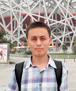

Guangliang Li
Ocean University of China
Research interests: reinforcement learning, imitation learning, and robotic applications.
Organizers

Ocean University of China
Research interests: reinforcement learning, imitation learning, and robotic applications.
The State University of New York at Binghamton
Research interests: autonomous intelligent robotics, AI planning, and robot learning.

Southern University of Science and Technology
Research interests: autonomous driving systems, mobile robotics, decision-making, and trustworthy AI.
National University of Defense Technology
Research interests: UAV swarms, manned-unmanned teaming, and reinforcement learning.
Honda Research Institute Japan Co., Ltd.
Research interests: cognitive science, human-AI interaction, joint action, and social robotics.

Honda Research Institute Japan Co., Ltd.
Research interests: embodied communication and interaction mechanisms in social robots.
Xi'an Jiaotong University
Research interests: safe and trustworthy visual understanding in driving scenarios.